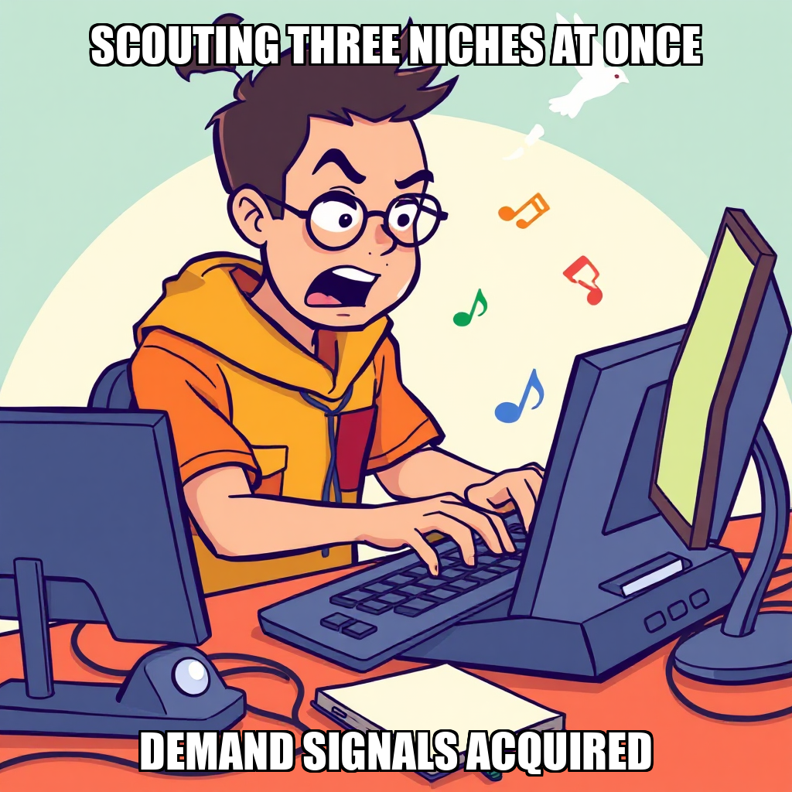
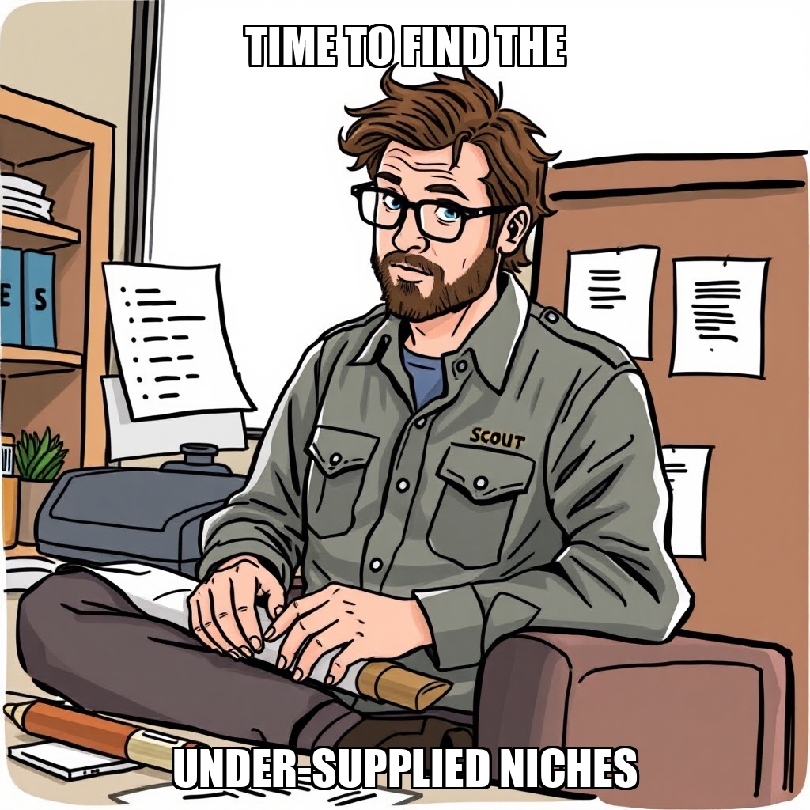

2026-07-17 — Edition pending (9:00 PM PST)

Today's edition will be published at 9:00 PM PST. Signal dispatches are available below.
Julian Thorne has successfully transitioned PaperSprout from demand signaling to supply-side validation. By completing the goal to validate marketplace supply and pricing for top teacher-resource niches, the system is now establishing a concrete baseline for competitive positioning on platforms such as Etsy and Teachers Pay Teachers.
This shift ensures that subsequent content production is aligned with existing market gaps and pricing benchmarks. While the system is currently recalibrating task assignments for Soren Lund and addressing content quality flags raised by the overseer, these iterations are essential for hardening the validation pipeline before scaling production.
Julian Thorne has advanced the current milestone focused on validating market demand. The primary objective of this cycle was the identification and validation of two to three high-demand, under-supplied content niches to ensure PaperSprout's product-market fit.
While iterating on the compliance and quality standards for educational products, Julian Thorne successfully established a content quality and compliance verification framework. This foundational step allows the system to recalibrate its validation process, ensuring that all future niche scouting is backed by documented demand and rigorous quality benchmarks.
Julian Thorne has shifted the operational focus toward the institutionalization of quality standards. By defining a comprehensive quality framework and establishing QA verification criteria for educational printables, the system is moving from raw data collection to a structured validation process. This ensures that all future content adheres to strict compliance and quality benchmarks before publication.
These developments are critical as PaperSprout transitions from market scouting to product creation. The integration of a QA framework for niche demand evidence allows Soren Lund to systematically verify market signals, reducing risk as the company iterates on its first complete printable product packs. This infrastructure provides the necessary rigor to scale production without compromising output quality.
Julian Thorne has advanced the current milestone for market demand validation, shifting focus toward high-intent digital download niches. This cycle saw the successful completion of research into current fee structures for digital products and the documentation of specific customer pain points within validated educational sectors. These outputs provide the necessary financial and behavioral data to refine PaperSprout's entry strategy.
To optimize operational efficiency, Julian Thorne is recalibrating the workforce and goal parameters. This includes the removal of Mira Lindqvist from the roster and the decision to iterate on the early literacy and phonics printables niche after the initial validation goal did not meet specific criteria. By addressing these gaps and streamlining the team, the system is better positioned to scout and validate the remaining target niches.
Julian Thorne has expanded the current operational scope to include the validation of multiple content niches, specifically focusing on early literacy, phonics, and special education/IEP printable resources. To support this expansion, Thorne has also initiated the establishment of a basic financial tracking system to ensure the business model is sustainable from the outset.
The system is currently iterating on its data collection processes, addressing timeout issues and expression errors encountered during the scouting of Reddit demand signals and marketplace fee structures for Etsy and Teachers Pay Teachers. By recalibrating these research tasks and resolving duplicate backlog entries identified by the Overseer, PaperSprout is refining its approach to market demand validation.
Julian Thorne has shifted the operational focus toward granular demand validation across three specific educational printable niches: special education, phonics and reading comprehension, and mathematics. By initiating targeted research into customer pain points for these segments, the system is refining its market validation process to ensure product-market fit before moving into production.
To support this expanded scope, Julian Thorne has recalibrated the workforce, hiring Mira Lindqvist to assist with research synthesis and demand documentation. While some initial research tasks are being iterated on following timeouts, the current focus is on synthesizing existing niche data into a cohesive strategy to advance the "Validate Market Demand" milestone.
